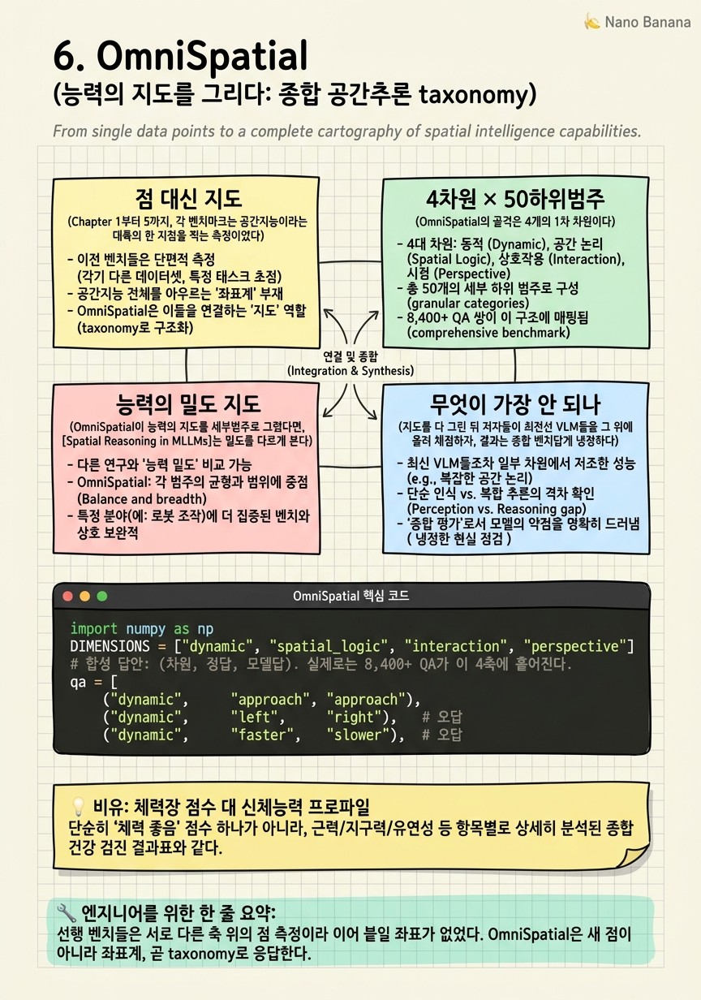

OmniSpatial
50개 세부범주, 8,400개가 넘는 수작업 QA. 이 숫자가 말하는 것은 새 문제가 아니라 새 지도다. 그동안 벤치마크들은 저마다 공간지능의 한 조각씩만 재고 있었고, 필드에 필요했던 건 또 하나의 점 측정이 아니라 능력 전체의 지도였다.

🎯 학습 목표
- 왜 필드가 또 하나의 벤치가 아니라 taxonomy를 필요로 했는지를, 선행 벤치(SpatialRGPT-Bench·VSI-Bench·SPHERE)가 각각 덮는 조각과 놓치는 조각으로 설명한다.
- OmniSpatial의 4차원(dynamic·complex spatial logic·spatial interaction·perspective-taking)과 대표 세부범주의 트리 구조를, 인지심리학적 근거와 함께 재현한다.
- survey의 5 인지범주 × 4 복잡도 레벨 밀도 지도에서 dense한 셀(extrinsic-qualitative-static, L1–L2)과 empty한 셀(quantitative·dynamic·L3–L4)을 구분하고 프런티어를 지목한다.
- 단일 accuracy 하나를 4차원 진단 프로파일로 바꾸는 taxonomy의 실무 가치를, 채점 코드로 재현하고 PointGraph·SpatialCoT 처방의 방향을 예고한다.
Chapter 5의 VSI-Bench는 값진 부정 결과를 하나 남겼다. 비디오 공간지능에서 CoT류는 듣지 않고 명시적 cognitive map만이 능력을 올린다는 것. 그러나 그 진단은 여전히 하나의 벤치, 하나의 무대 위에서 얻어진 것이었다. 소파와 냉장고의 상대 방향을 못 맞히는 모델이, 움직이는 두 물체의 충돌을 예측하는 일이나 상대의 시점에서 왼쪽을 지목하는 일에서는 어떻게 무너지는가. 서로 다른 벤치가 서로 다른 축을 재고 있어서, 우리는 이 결함들이 하나의 지형 위 어디에 놓이는지를 볼 수 없었다.
OmniSpatial (Mengdi Jia 외, ICLR 2026)은 이 파편화 자체를 문제로 삼는다. 저자들은 새로운 어려운 문제 하나를 더 던지는 대신, 공간추론을 dynamic reasoning·complex spatial logic·spatial interaction·perspective-taking의 4개 1차 차원으로 나누고, 그 아래 50개 세부범주와 8,400개가 넘는 수작업 QA를 인지심리학 위에 정렬한다. 결과물은 또 하나의 점이 아니라, 능력을 좌표 위에 펼친 지도다.
이 챕터의 논지는 '왜 지도인가'다. 지도는 각 벤치가 덮는 조각과 놓치는 조각을 한눈에 드러내고, 어느 축이 비어 있는지를 보여준다. OmniSpatial의 지도 위에서 open·closed 가릴 것 없이 최전선 VLM들이 공통으로 가장 크게 무너지는 두 축이 드러난다. perspective-taking과 dynamic reasoning이다. 이 노출이 곧 다음 챕터의 표적을 정한다. ch7은 그중 가장 안 되는 perspective-taking을 mental simulation으로 정면돌파하고, PointGraph·SpatialCoT라는 OmniSpatial 자신의 두 처방이 ch9·ch10의 scene-graph grounding으로 이어진다.
핵심 내용
점 대신 지도
Chapter 1부터 5까지, 각 벤치마크는 공간지능이라는 대륙의 한 지점을 찍는 측정이었다. BLINK는 단일 이미지의 지각 격차를 GPT-4V 51.26% 대 인간 95.7%로 찍었고, VSI-Bench는 비디오 기억을 Gemini-1.5 Pro 45.4% 대 인간 79.2%로 찍었다. 각각은 날카로운 진단이지만, 서로 다른 축 위의 점이라 이어 붙일 좌표가 없었다.
문제는 이 점들이 필드에 서로 어긋난 그림을 준다는 데 있다. 어떤 벤치는 정적 관계만 재고, 어떤 벤치는 metric 추정만 재고, 어떤 벤치는 egocentric 시점만 다룬다. 모델 A가 벤치 X에서 60%, 벤치 Y에서 40%를 낸다고 할 때, 그 차이가 능력의 차이인지 축의 차이인지 우리는 분간할 수 없었다. 점 측정의 누적은 지형이 되지 못한다.
| 선행 벤치 | 주로 덮는 조각 | 구조적으로 놓치는 조각 |
|---|---|---|
| SpatialRGPT-Bench | region 단위 정적 관계·metric 거리 | dynamic·perspective·다물체 상호작용 |
| VSI-Bench | egocentric 비디오 기억·metric 추정 | 타자 시점(allocentric perspective)·복합 논리 chaining |
| SPHERE | 다중 스킬 합성·ego/allo 대비 | 통합된 세부범주 taxonomy·대규모 세분화 |
SPHERE (ACL 2025)가 특히 중요한 이정표다. 이 벤치는 스킬을 하나씩 재는 것을 넘어 여러 스킬을 합성했을 때의 붕괴를 처음으로 정량화했다. GPT-4o가 단일 스킬 77.3%에서 다중 스킬 58.6%로 떨어지는 accuracy cliff, 그리고 egocentric과 allocentric 사이 최대 33.4%의 gap을 보였다. 조각들이 개별적으로 어려운 게 아니라, 조각을 잇는 순간 무너진다는 신호다.
OmniSpatial의 응답은 새 점이 아니라 좌표계다. 8,400개가 넘는 QA를 4차원 50세부범주 위에 배치한다는 것은, 각 QA를 지도 위 한 칸에 꽂는다는 뜻이다. 그러면 비로소 모델의 결함이 '점수 40%'가 아니라 '이 축은 되고 저 축은 안 된다'는 진단 프로파일로 읽힌다. taxonomy는 accuracy 하나를 능력의 지형도로 바꾸는 장치다.

4차원 × 50하위범주
OmniSpatial의 골격은 4개의 1차 차원이다. dynamic reasoning은 움직임·궤적·시간에 걸친 변화를 다루고, complex spatial logic은 여러 관계를 chaining하는 다단계 추론을 다루고, spatial interaction은 물체·행위자 사이의 물리적 상호작용을 다루고, perspective-taking은 나 아닌 다른 시점에서 장면을 재구성하는 능력을 다룬다. 이 넷은 서로 다른 인지 기능에 대응하도록 갈랐다.
이 절단이 자의적이지 않은 이유는 인지심리학에 뿌리를 두기 때문이다. perspective-taking은 발달심리학의 고전인 관점 취하기(Piaget의 three-mountain 과제 계열)에 대응하고, dynamic reasoning은 물리 직관과 궤적 예측에, spatial logic은 관계 추론과 심적 회전에 대응한다. 저자들은 벤치를 데이터 편의로 짜지 않고, 인간 공간인지의 하위능력 분류를 먼저 세운 뒤 거기에 QA를 채워 넣었다.
각 차원은 다시 세부범주로 갈라져 도합 50개를 이룬다. 예컨대 perspective-taking 아래에는 타자의 좌우 지목, 관찰자 이동 후의 배치 예측, 지도-실경 정렬 같은 세부과제가 놓이고, dynamic reasoning 아래에는 충돌·추월·접근/이탈 판단 같은 것이 놓인다. 세분화의 목적은 난이도 과시가 아니라 진단 해상도다. 모델이 perspective 축에서 무너질 때, 그 안의 어느 세부범주에서 무너지는지까지 짚을 수 있게 된다.
중요한 점은 이 4차원이 코스의 이전 벤치들을 포함하면서 확장한다는 것이다. VSI-Bench가 주로 정적 배치와 metric 추정에 머물렀다면, OmniSpatial은 dynamic과 perspective를 1차 차원으로 승격시켜 이전 벤치가 비워 둔 L3–L4 영역으로 밀고 들어간다. 능력의 지도가 이전보다 넓어진 셈이다.

능력의 밀도 지도
OmniSpatial이 능력의 지도를 세부범주로 그렸다면, Spatial Reasoning in MLLMs survey는 같은 지형을 두 축의 격자로 정리한다. 하나는 인지 성격의 축이다. intrinsic 대 extrinsic(물체 자체의 속성인가, 물체 사이 관계인가), qualitative 대 quantitative(방향 같은 정성 관계인가, 거리 같은 정량 값인가), static 대 dynamic(정지 장면인가, 시간에 걸친 변화인가)의 조합으로 5개 인지범주를 이룬다. 다른 하나는 복잡도 축으로, L1 직접 지각부터 L2 단일 단계, L3 다단계 chaining, L4 고급 합성까지 4레벨이다.
이 격자 위에 기존 연구를 얹으면 밀도가 극도로 불균등하다. 데이터와 벤치가 몰린 dense한 셀이 있고, 거의 비어 있는 empty한 셀이 있다. 지도의 값어치는 이 불균등을 드러내는 데 있다.
| 인지범주 \ 복잡도 | L1 직접지각 | L2 단일단계 | L3 다단계 chaining | L4 고급 합성 |
|---|---|---|---|---|
| extrinsic · qualitative · static | ●● dense | ●● dense | ○ sparse | · empty |
| extrinsic · quantitative · static | ● | ● | · empty | · empty |
| intrinsic (속성·크기) | ●● dense | ● | · empty | · empty |
| static → dynamic | ○ sparse | ○ sparse | · empty | · empty |
| perspective / allocentric | ○ sparse | · empty | · empty | · empty |
지도가 말하는 프런티어는 명확하다. 필드는 extrinsic-qualitative-static의 L1–L2 구석에 두껍게 몰려 있다. 두 물체의 정적 방향 관계를 직접 지각으로 묻는, 코스 초반의 SpatialVLM·SpatialRGPT가 다룬 바로 그 영역이다. 반대로 quantitative(정량 metric), dynamic(시간 변화), 그리고 L3–L4(다단계·합성) 쪽으로 갈수록 셀은 급격히 비어 간다. perspective/allocentric 행은 거의 통째로 공백이다.
OmniSpatial의 4차원은 정확히 이 빈칸을 겨냥한 것으로 읽힌다. dynamic reasoning은 static→dynamic 행을, complex spatial logic은 L3–L4 열을, perspective-taking은 가장 비어 있는 allocentric 행을 채우려는 시도다. 능력의 밀도 지도 위에서 OmniSpatial은 필드가 몰려 있던 구석이 아니라 비어 있던 프런티어에 QA를 심는다. 그리고 다음 절이 보여주듯, 모델들은 정확히 그 비어 있던 칸에서 가장 크게 무너진다.
무엇이 가장 안 되나
지도를 다 그린 뒤 저자들이 최전선 VLM들을 그 위에 올려 채점하자, 결과는 종합 벤치답게 냉정하다. open-source든 closed-source든, 프런티어 모델들이 이 종합 suite 전반에서 공통으로 유의미한 한계를 보인다. 특정 모델만의 약점이 아니라 세대 전체의 지형적 결함이다.
어느 축이 가장 안 되는가. 지도의 가장 비어 있던 칸, perspective-taking과 dynamic reasoning이다. 프런티어 모델조차 이 두 축에서 가장 크게 무너진다. OmniSpatial의 정확한 model-vs-human 백분율은 여기서 인용하지 않는다. 다만 이 정성적 결론은 sibling 벤치들의 검증된 수치와 정확히 같은 방향을 가리킨다.
| 벤치 | 대표 gap | 무엇을 노출하나 |
|---|---|---|
| BLINK | GPT-4V 51.26% vs 인간 95.7% | 정적 지각조차 큰 격차 |
| VSI-Bench | Gemini-1.5 Pro 45.4% vs 인간 79.2% | 비디오 기억·metric 추정 |
| SPHERE | GPT-4o 67.9% vs 인간 93.0% | 합성·ego/allo |
SPHERE의 두 숫자가 왜 perspective와 dynamic이 최약축인지를 구조적으로 설명한다. 첫째는 compositional cliff다. GPT-4o가 단일 스킬 77.3%에서 다중 스킬 58.6%로 18.7pt 급락한다. 능력은 조각으로 재면 그럭저럭이지만 조각을 chaining하는 L3–L4에서 무너진다는 뜻이며, complex spatial logic 축의 취약함과 같은 현상이다. 둘째는 egocentric과 allocentric 사이 최대 33.4%의 gap이다. 모델은 자기 시점에서는 답하다가 타자·이동 시점으로 좌표계를 옮기는 순간 급락한다. 이것이 perspective-taking이 지도에서 가장 비어 있고 채점에서 가장 안 되는 이유다.
왜 하필 이 둘인가. 코스의 중심 명제로 돌아가면 답이 보인다. perspective-taking은 reference-frame instability를 정면으로 요구하는 축이다. egocentric 관측을 다른 좌표계로 명시적으로 변환해야 하는데, 현 세대 모델에는 그 변환 메커니즘이 없다. dynamic reasoning은 patterns-not-physics 격차를 정면으로 요구한다. 시간에 걸친 궤적을 예측하려면 co-occurrence가 아니라 물리 법칙이 필요한데, 모델은 통계적 공기를 exploit할 뿐이다. 가장 비어 있던 두 칸이 코스가 진단한 두 구조적 격차와 정확히 겹친다.
OmniSpatial은 진단에서 멈추지 않고 두 처방을 제시하며, 둘 다 다음 챕터들의 예고편이다. 첫째 PointGraph는 명시적 scene-graph 구조를 cue로 주입해 관계 추론을 떠받친다. VSI-Bench의 cognitive map 실마리를 구조화된 형태로 잇는 것으로, ch9·ch10의 scene-graph grounding으로 확장된다. 둘째 SpatialCoT는 novel-view chain-of-thought로, 대안 시점을 상상해 그 위에서 추론하게 한다. CoT가 언어 위에서 공회전한다는 ch5의 부정 결과를 시점 상상으로 우회하려는 시도이며, ch7이 mental simulation으로 정면돌파할 바로 그 방향이다. 지도는 프런티어를 노출했고, 화살표는 이미 그 프런티어를 향해 있다.

💡 비유로 이해하기
한 사람의 신체능력을 '체력장 72점'이라는 숫자 하나로 요약한다고 하자. 이 숫자는 순위를 매기기엔 편하지만, 이 사람이 무엇을 잘하고 무엇을 못하는지는 전혀 말해주지 않는다. 유연성이 바닥이어서 72점인지, 지구력이 바닥이어서 72점인지가 같은 점수 뒤에 숨는다. 점 하나로는 처방을 세울 수 없다.
taxonomy는 이 단일 점수를 종목별 프로파일로 쪼갠다. 근력·유연성·지구력·순발력을 따로 재면, 같은 72점이라도 '순발력만 심하게 낮은 사람'과 '유연성만 낮은 사람'이 완전히 다른 훈련 계획을 받게 된다. OmniSpatial이 하는 일이 정확히 이것이다. 공간지능 accuracy 하나를 dynamic·spatial logic·interaction·perspective 네 종목으로 쪼개, 어느 근육이 약한지를 드러낸다.
그리고 프로파일을 그리자 모두가 같은 두 종목에서 무너진다는 사실이 보인다. perspective-taking과 dynamic reasoning이다. 이것은 개인의 게으름이 아니라 훈련 프로그램 자체에 그 두 종목이 빠져 있었다는 뜻이다. 밀도 지도의 빈칸과 정확히 겹친다. 지도는 어디를 훈련해야 하는지를, 다음 챕터들의 처방이 어디를 겨냥해야 하는지를 한꺼번에 말해준다.
💻 코드 예시
OmniSpatial의 4차원 위에서 모델 답안을 채점해 per-dimension accuracy 프로파일, 곧 텍스트 capability radar를 출력하는 미니 채점기다. 합성 답안을 쓰지만 요지는 분명하다. 같은 답안 집합이 단일 accuracy 하나로 요약되면 진단력이 사라지고, taxonomy 축으로 쪼개면 어느 축(perspective·dynamic)이 프런티어인지가 드러난다. 이것이 점을 지도로 바꾸는 일의 최소 재현이다.
import numpy as np
DIMENSIONS = ["dynamic", "spatial_logic", "interaction", "perspective"]
# 합성 답안: (차원, 정답, 모델답). 실제로는 8,400+ QA가 이 4축에 흩어진다.
qa = [
("dynamic", "approach", "approach"),
("dynamic", "left", "right"), # 오답
("dynamic", "faster", "slower"), # 오답
("spatial_logic", "behind", "behind"),
("spatial_logic", "3", "3"),
("spatial_logic", "stacked", "adjacent"), # 오답
("interaction", "reach", "reach"),
("interaction", "block", "block"),
("interaction", "pass", "pass"),
("perspective", "his_left", "my_left"), # egocentric bias
("perspective", "toward", "away"), # 오답
("perspective", "north", "my_left"), # 오답
]
def score_by_dimension(qa):
hit = {d: 0 for d in DIMENSIONS}
tot = {d: 0 for d in DIMENSIONS}
for dim, gt, pred in qa:
tot[dim] += 1
hit[dim] += int(gt == pred)
return {d: (hit[d] / tot[d] if tot[d] else 0.0) for d in DIMENSIONS}
def radar(profile, width=24):
print("capability radar (per-dimension accuracy)")
for d in DIMENSIONS:
acc = profile[d]
bar = "#" * int(round(acc * width))
print(f" {d:13s} |{bar:<{width}}| {acc*100:5.1f}%")
profile = score_by_dimension(qa)
overall = np.mean(list(profile.values()))
radar(profile)
print(f"\n {'OVERALL':13s} single number = {overall*100:.1f}%")
weakest = min(profile, key=profile.get)
print(f" frontier (weakest axis): {weakest} @ {profile[weakest]*100:.1f}%")qa는 4차원에 흩어진 (차원, 정답, 모델답) 합성 답안이다. score_by_dimension은 축별로 hit/total을 세어 per-dimension accuracy를 낸다. 이 한 걸음이 taxonomy의 본질이다. 같은 답안을 차원별로 분리 집계하는 순간 진단 해상도가 생긴다. radar는 각 축의 정확도를 텍스트 막대로 그려, closed·open을 가리지 않고 나타나는 지형적 약점을 눈에 보이게 한다. 마지막 두 줄이 논지를 못 박는다. 전체를 평균 내면 OVERALL 50.0%라는 점 하나로 뭉개지지만, 축으로 펼치면 interaction 100%·perspective 0%로 갈라지고 weakest axis가 perspective로 지목된다. dynamic 역시 33%로 낮게 나와, 논문이 지목한 두 최약축(perspective·dynamic)이 프로파일에서 그대로 드러난다. 단일 accuracy를 진단 프로파일로 바꾸는 것, 이것이 벤치마크 시대의 종합이 남긴 도구다.
🏭 현업에서의 평가
✅ 시니어가 보는 것
- 단일 accuracy를 능력 축(dynamic·spatial logic·interaction·perspective)별 프로파일로 분해하고, 어느 축이 프런티어인지를 데이터로 지목할 수 있는가
- 밀도 지도(5 인지범주 × 4 복잡도)에서 dense/empty 셀을 읽고, 자기 데이터·벤치가 어느 칸을 덮고 어느 칸을 비우는지 진술하는가
- perspective-taking·dynamic의 약점을 reference-frame instability·patterns-not-physics라는 구조적 격차로 환원하고, PointGraph(scene-graph)·SpatialCoT(novel-view)를 그 격차에 맞는 처방으로 연결하는가
⚠️ 레드 플래그
- 서로 다른 축을 재는 벤치들의 점수를 같은 '공간 능력'으로 뭉뚱그려 비교한다 (축의 차이를 능력의 차이로 오독)
- 종합 벤치의 낮은 점수를 'CoT를 더 붙이면 된다'로 처방한다 (ch5에서 이미 실패한 접근, SpatialCoT가 굳이 novel-view인 이유를 놓침)
- OmniSpatial의 model-vs-human 정확도 수치를 기억에 의존해 지어낸다 (검증된 sibling 수치와 정성적 결론만 인용해야 함)
🎤 예상 인터뷰 질문 (클릭하면 모범답안)
왜 필드는 또 하나의 어려운 벤치가 아니라 taxonomy(OmniSpatial)를 필요로 했는가?
선행 벤치들은 저마다 공간지능의 다른 축을 재는 점 측정이라, 모델 A가 벤치 X 60%·벤치 Y 40%를 낼 때 그 차이가 능력 차이인지 축 차이인지 분간할 수 없었다. taxonomy는 8,400+ QA를 4차원 50세부범주라는 하나의 좌표계에 배치해, 각 결함을 지도 위 특정 칸으로 읽게 한다. 그 결과 단일 accuracy가 능력 축별 진단 프로파일로 바뀌고, 어느 축이 비어 있고 어디서 무너지는지가 드러난다. 점의 누적은 지형이 되지 못하고, 필요한 것은 좌표계였다.
OmniSpatial에서 최전선 VLM이 가장 크게 무너지는 두 축은 무엇이며, 왜 하필 그 둘인가?
perspective-taking과 dynamic reasoning이다. perspective-taking은 egocentric 관측을 타자·이동 시점 좌표계로 명시 변환할 것을 요구하는데, 현 세대 모델에는 그 reference-frame 변환 메커니즘이 없다. SPHERE가 보인 최대 33.4% ego/allo gap이 같은 현상이다. dynamic reasoning은 시간에 걸친 궤적 예측에 물리 법칙을 요구하는데, 모델은 co-occurrence를 exploit하는 patterns-not-physics에 머문다. 두 최약축이 코스가 진단한 두 구조적 격차와 정확히 겹친다.
OmniSpatial이 제시한 PointGraph와 SpatialCoT는 각각 무엇을 노리며 다음 세대와 어떻게 이어지는가?
PointGraph는 명시적 scene-graph 구조를 cue로 주입해 관계 추론을 떠받치는 처방으로, VSI-Bench의 cognitive map 실마리를 구조화한 형태이며 이후의 scene-graph grounding으로 확장된다. SpatialCoT는 novel-view chain-of-thought로 대안 시점을 상상해 그 위에서 추론하게 한다. 이는 CoT가 언어 위에서 공회전한다는 부정 결과를 시점 상상으로 우회하려는 것으로, mental simulation으로 perspective-taking을 정면돌파하는 다음 챕터의 방향을 예고한다. 두 처방 모두 진단이 지목한 프런티어를 겨냥한다.
✨ 핵심 요약
점의 누적은 지형이 아니다
선행 벤치들은 서로 다른 축 위의 점 측정이라 이어 붙일 좌표가 없었다. OmniSpatial은 새 점이 아니라 좌표계, 곧 taxonomy로 응답한다.
4차원 50세부범주 8,400+ QA
dynamic reasoning·complex spatial logic·spatial interaction·perspective-taking의 4개 1차 차원 아래 50세부범주와 8,400+ 수작업 QA를 인지심리학 위에 정렬한다.
taxonomy는 인지심리학에 뿌리를 둔다
데이터 편의가 아니라 인간 공간인지의 하위능력 분류를 먼저 세우고 QA를 채운다. perspective-taking·물리 직관·심적 회전이 각 차원의 근거다.
밀도 지도가 프런티어를 노출한다
survey의 5 인지범주 × 4 복잡도 격자에서 필드는 extrinsic-qualitative-static·L1–L2에 몰려 있고, quantitative·dynamic·L3–L4와 allocentric은 비어 있다.
가장 안 되는 두 축
open·closed 가릴 것 없이 프런티어 모델이 perspective-taking과 dynamic reasoning에서 가장 크게 무너진다. 지도의 빈칸과 채점의 최약축이 겹친다.
합성하면 무너진다 (SPHERE)
GPT-4o가 단일 스킬 77.3%에서 다중 스킬 58.6%로 급락하고, ego/allo 사이 최대 33.4% gap을 보인다. chaining과 시점 변환이 붕괴 지점이다.
빈칸 = 두 구조적 격차
perspective의 약점은 reference-frame instability, dynamic의 약점은 patterns-not-physics다. 가장 비어 있던 칸이 코스가 진단한 격차와 정확히 겹친다.
PointGraph·SpatialCoT는 다음 챕터의 예고
scene-graph cue 주입(PointGraph)은 ch9·ch10의 grounding으로, novel-view CoT(SpatialCoT)는 ch7의 mental simulation으로 이어진다.
- Mengdi Jia et al. (2025). OmniSpatial: Towards Comprehensive Spatial Reasoning Benchmark for Vision Language Models. ICLR 2026. arXiv:2506.03135